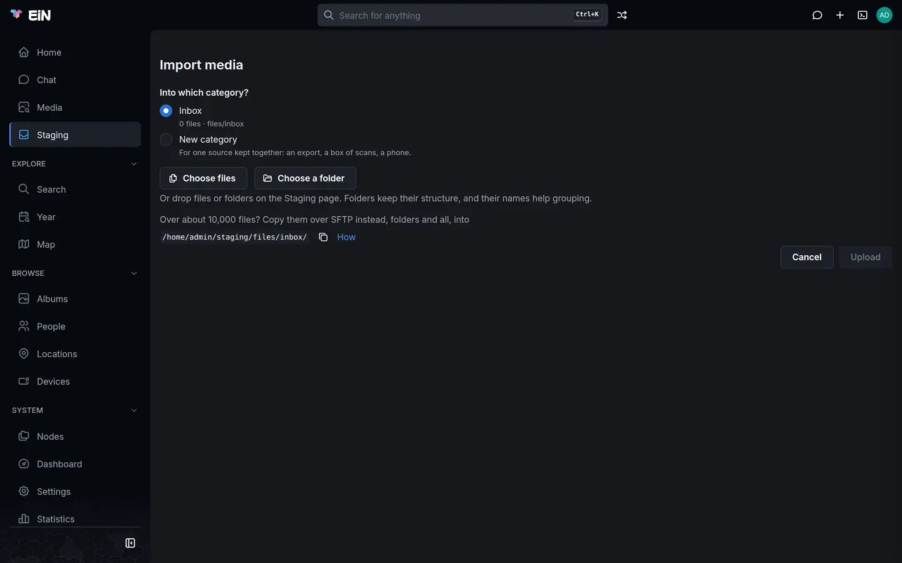

Everything you upload waits in your own staging area until you decide where it goes. This page is for family members sorting their uploads into albums. It covers the categories that hold your files, the albums EiN suggests, the keys and buttons that file, discard or regroup those suggestions, and how to undo any of it.
What staging is
Pictures, videos and recordings you bring in do not go straight into the family's shared library. They land in your staging area, a private inbox that only you can see. The page says so under its title: "New media to sort before it joins the shared library. Only you can see it." How files get there (Import media, dragging files onto a page, the Media page's upload, SFTP) is on Getting your photos in.
While the files wait, EiN reads each one: its date, its place, the faces in it and its thumbnails. It also checks whether you already have a copy. Then the organizer sorts them into suggested albums, called groups on these pages: a birthday, a trip, a folder you named, a year of everyday pictures. You go through the groups and decide for each one:
- file it as a new album, or a new private album only you can open;
- file it into an album that is already in the library;
- put it aside for Later;
- discard it to your trash.
Only filing makes the files visible to anyone else. Every decision can be undone.
Until a file is filed, the views of the whole library leave it out: the Media page and its counts, the map, On this day, search, and the number on a person's card on the People page. The faces and voices in it are found all the same, and count once the file is filed.
Open staging
Open Staging in the sidebar, under Media. While you have only the Inbox, staging opens the Inbox's page directly. Once you have more than one category, it opens on the overview of all of them.
The overview
The overview shows one card per category. The header has Import media and New category.
Each card shows:
- the category's name, and under it what it holds and its folder, for example
Scans · files/box-3; - a gear, Category settings;
- a bar of its files by how far along they are: Being prepared, To sort, Needs a date and Other files (files that are not pictures, videos or recordings), or "Nothing here yet.";
- how many files it holds and their size, followed by "filed into" and an album's name when its files go to that album by default;
- where the newest files are on their way in (below);
- Import, and Continue (Open while the category is empty).
While files are on their way in, a card and the top of a category's page show up to three stages. Hold the pointer over one to see what it means.
| Stage | What it means |
|---|---|
N of M arriving |
Uploading from this browser |
N being prepared, about <time> |
Their dates and places are being read; the groups they join may still change |
N being grouped |
Read, and waiting for the organizer to put them in a group |
The organizer groups new files within a few minutes of their arrival. On a category's page, Group now beside "being grouped" asks it to start at once; the message "Grouping asked for: the new files are grouped within a few minutes" confirms it.
Drag files or folders over the overview and a tile appears for each category. Drop them on one and they go into that category's folder for today, folders and all.
When a folder that arrived in the Inbox looks like it came from one source, a blue box above the cards says so, for example "“Takeout” looks like Google Photos", with the two strongest clues. The same box shows on the Inbox's Files tab.
- Its button moves the folder into your category of that kind, for example Move to Google Photos export….
- When you have no such category, the button makes one first: Make a Google Photos export category… opens the New category dialog, whose Create and move “Takeout” makes the category and moves the folder into it.
- The ✕ ("Keep it here, stop asking") leaves the folder where it is and stops asking.
Nothing moves by itself.
Below the cards, a yellow box titled Needs you appears when a GPS track waits for the device that recorded it; Choose device opens the Inbox's files, where you say which device it was (see Devices and GPS tracks). Last comes the folder to copy into over SFTP, for tens of thousands of files; see SSH and SFTP and Staging and importing for administrators.
Categories
A category keeps one source together: a Google Photos export in one, a box of scanned prints in another, your phone in a third. Each category is a folder of your staging area, and what it holds decides how EiN treats its files: how they are grouped, which clocks may date them, and in which order they are processed.
The Inbox is always there and cannot be removed. Uploads land in it unless you choose another category.
The kinds of category
| What it holds | Use it for | What it changes |
|---|---|---|
| Inbox | Anything; the default | Grouped by time and place. A date in a file name, such as a phone's IMG_20190601_123456.jpg, counts when nothing better dates the picture. |
| Google Photos export | A Google Takeout | Grouped by time and place. Google's JSON files are paired with their photos and give them their date, place and caption. An album folder's title names its group. Processed after other work, so what you upload to the Inbox meanwhile is ready first. |
| Scans | Scanned prints, negatives and slides | Grouped by folder and by runs of file names; when a scan was made never groups it. No scanner clock, file name or upload time dates a scan, only a date a person gave it, so most count under Needs a date until you give them one. Processed after other work. |
| Phone | A phone's pictures | Grouped by time and place. Dates in file names count. |
| Camera | A camera's memory card | Grouped by time and place. File names are not read as dates. |
| Messaging | Pictures saved from a messenger | A group per folder and month, all in the Everyday lane. Dates in file names count. Sidecar files are left as they are. |
| Screenshots | Screenshots | Like Messaging. |
| Other | Anything else | Grouped by time and place. File names are not read as dates. |
How these work for dates is explained further on Dates and places of pictures.
Make a category
- On the overview, choose a kind on the dashed New category card ("Keep one source together: a Google Photos export, a box of scanned prints, a phone."), or choose New category in the header. On a category's page, click its name and choose New category….
- In the New category dialog, check What it holds. When you started from a kind's button, it is chosen already, and Called holds the kind's name.
- Fill in Called, the name the pages show, for example
Box 3. - Leave Folder name empty to have it made from the name, or type one: lowercase letters, digits and dashes, at most 48 characters. The folder name never changes.
- Choose Create. The new category's page opens.
You can also make a category while importing. In Import media, choose New category under "Into which category?", then What it holds and Called; the dialog shows the folder it makes ("Folder files/box-3"). The category is made when you choose Upload.


Change or remove a category
Open Category settings with the gear on the category's card, or from the ⋮ menu on its page.
| Field | What it does |
|---|---|
| Called | The name the pages show. Its folder stays as it is. |
| What it holds | The kind, from the table above. The Inbox's kind cannot be changed. |
| Files go to | An album its files go to by default. Type in Find an album to choose one you may add to; None clears it. Without one: "No album by default: each group is filed where you choose." |
Choose Save to keep the changes.
An album under Files go to becomes the proposal for most groups that no library album matches well, marked "· the category’s album" under the proposal, and it is the album B files into until you choose another.
Some finer settings of a category, such as how readily a day becomes a group of its own, can only be changed from the shell; see Staging and importing for administrators.
To remove a category, choose Remove category in its settings, then Remove (or Keep it). Only an empty category can be removed: "Only an empty category can be removed: move or discard its files first." The Inbox cannot be removed.
A category's page
The page's title is the category's name with a chevron. Click it to switch to another category, to All categories, or to New category….
The header has Upload, which adds files to the category's folder for today, and under ⋮: Upload a folder, Import media…, Category settings and, with more than one category, All categories. You can also drop files anywhere on the page, on any tab, and they go into the category on screen.
Under the tab names, a thin bar shows the category's files and the stages of what is arriving, with Group now. The four tabs:
| Tab | What it is for | Its number |
|---|---|---|
| Sort | Deciding the suggested albums, one after another | Groups |
| Duplicates | Exact copies and look-alikes, to resolve | Exact copies |
| Files | The category's folders and files | Files held |
| Done | What was decided here, with Undo | Files filed and discarded |
The Duplicates tab has a page of its own: Duplicates.
Sort: the stream of suggested albums
The Sort tab lists the category's groups one after another, oldest first. Every picture, video and recording that has been read is in exactly one group.
Until the first groups are made, the tab says No groups yet, with "Groups appear as your files are prepared: N still to go." or "Groups appear here once uploaded files have been prepared and organized, within minutes of their arrival." Show the files opens the Files tab.
How the stream looks
The line above the stream has:
- the lanes, each with its number of groups, when more than one lane has groups; otherwise "N photos to decide in M groups";
- "◌ N applying" while decisions you made are still being carried out;
- Select, to select every group of the lane at once (see Decide several groups at once);
- Oldest first or Newest first. Groups without a date come last either way.
One group is open. The others are closed to their name and two rows of their pictures. Click a closed group, or press J and K, to open the next or previous one.
An open group shows its pictures in a grid per day. A group that spans more than 40 days, such as a year of everyday pictures, shows a grid per month instead, with the month's days as small buttons above it; click one to select that day's pictures. Pictures without a date come last, under No date. Below the open group, "Next:" and a name say which group follows.
A group's header shows its name, then its dates, how many photos and how many days it holds, for example "Christmas Eve · 24 Dec 1975" over "24 Dec 1975 · 86 photos". Badges may follow:
| Badge | Meaning |
|---|---|
| Trip | Two or more days away from home |
| Still indexing | "Some of these are still being indexed, so the group may still change" |
| Later | Put aside with L |
| Yours | "You edited this group, so the organizer leaves it as it is" |
⧉ 4 in library · 2× 1 |
Some pictures are copies or look-alikes; its menu has Compare, Keep the library copies and Select these (Duplicates) |
A closed group says where it is proposed to go when that is a library album, for example "→ Sailing in the archipelago likely". The open group has its proposal as a button with Enter, or New album… with N when there is no proposal. Its ⋯ menu holds every action.
Where you were is kept in the page's address, and per category in your browser, so a reload or a link brings you back to the same group. When a stream holds 30 groups or more, a time rail at its right edge brings the groups from a chosen date up.
The lanes
The stream is divided into lanes. Each lane is a view of some of the category's groups.
| Lane | What it holds |
|---|---|
| To sort | Events, trips, folders a person named, and runs of scans |
| Everyday | Each year's ordinary days, as one group per year, or per month in a busy year |
| Needs a date | Pictures with no date, or dated only to a year or a month |
| Clutter | Screenshots and images saved from messages |
| Later | Anything you put aside with L, whatever lane it came from |
Groups in the Everyday, Needs a date and Clutter lanes are named after what they hold: "Everyday · 2014", "Screenshots and saved images · 2019", "Undated · box-3", or "1987 · box-3" for pictures known only to a year. They are collections, not events, so they are not split, merged or called "not a group". To take some pictures out of one, make them a group of their own with New group on a day, or move them with <, > and G (see Change the groups).
- Everyday. Each day of an Everyday group is compared with the library's albums. A day that matches one shows it in its header, for example "→ Christmas at the cottage 72%", with File, which files that day's pictures into the album. Select the day with [ or ] and Enter does the same. A closed Everyday group says how many of its days match an album, for example "→ 3 days match an album".
- Needs a date. Give the pictures a time with T (Set the time…): the Set time dialog takes one start time, and the pictures keep their spacing or follow a minute apart. A picture known only to a year or a month keeps that date unless you click its row to give it a time. Once dated, the organizer puts them with the events and days they belong to. The dialog is explained on Dates and places of pictures.
- Clutter. Its proposal is Discard.
What Enter proposes
Each group has a proposal: what Enter, or the button on the group, does with it. In the column beside the stream (on a wide screen) it comes with how sure it is:
| Dots | Word | Meaning |
|---|---|---|
| ●●● | sure | EiN is confident |
| ●●○ | likely | Probably right; have a look |
| ●○○ | unsure | A starting point |
The button says what happens:
| Button | When it is proposed |
|---|---|
| Add to “…” | A library album you may add to matches the group well (likely or sure), or it is the category's album under Files go to |
| New album “…” | No album fits: a new album under the group's name. A folder a person named is proposed as a new album under the folder's name, sure. |
| Keep the library copies · N photos go | Most of the group's photos are copies of photos already in the library; the copies go and the rest of the group stays to be sorted |
| Discard | Clutter |
| File N matched days · M photos | An Everyday group some of whose days match a library album you may add to; each matched day goes into its album and the rest stays |
| "No proposal: N, A, B or X." | Nothing to propose, for example an Everyday group with no matched days in a category with no album under Files go to |
Runs of scans and folders a person named go into an existing album only when the match is sure. Nothing is ever filed by a match on its own: you decide every time.
File a group
- Open the group: click it, or press J or K until it is open.
- Look at the proposal on the group's button, or at the top of the column beside the stream.
- Press Enter or click the button.
- For an existing album, the photos are filed at once.
- For a new album, the New album dialog opens with the group's name under Name. Change it if you like, and choose Create album.
- The group leaves the stream and the next one opens in its place. A green message says, for example, "86 photos filed in “Christmas at the cottage”", with Undo.
Instead of the proposal you can choose another way, each with its key:
| Choice | Key | What it does |
|---|---|---|
| New album | N | A new album from the group, shared as your new albums are. |
| New private album | P | A new album only you can open ("Only you see it"). Its name is still listed among the albums. |
| Add to album… | A | The Add to an album dialog: type to find any album you may add to, or type a name and choose New album “…” with that name. Before you type, your recent albums are listed, and 1 to 8 pick one. |
| The target | B | Files into the target album without asking. Shift+B chooses another target ("B now files into “Christmas at the cottage”"). |
| A candidate | 1 2 3 | Files into one of the albums EiN found for the group (see Candidates and compare). |
The target is the album you chose with Shift+B for this category, else the category's album under Files go to when you may add to it, else the album you filed into last. The target and your recent albums are remembered in your browser.
Filing moves the files out of your staging into the album. Everything EiN has read about them goes along: dates, places, faces and thumbnails. Text in them, such as a letter or a sign, is read once they are filed. A new album is shared the way your new albums are, as the administrator set it up (see Sharing); a private one only you can open. Filed into an existing album, the files are shared the way that album is. An album you may only look at is refused before anything moves: "You can't add to “Christmas 1975”."
File part of a group
You do not have to file a group whole.
- Press [ or ] to step to a day (or a month) of the open group, or select pictures the way you do in an album (see Albums). With the arrow keys on a picture, Space selects it.
- Enter, N, P, A, B and X act on those pictures alone; the line at the foot of the stream says so, for example "New album of 12 pictures".
- The rest of the group stays where it is.
With pictures selected, New group of N pictures under the open group makes them a group of their own instead.
Candidates and compare
On a computer, when the Sort tab is at least 1,100 pixels wide, a column stands beside the stream. It starts with "Put it in" and the group's name, then the proposal and its dots. Below them are up to three candidates: library albums the group may belong in, best first. Each shows its name, a percentage, its dates and size, and up to three reasons in words, such as "within 40 min of its photos for 12 of 12", "same places for 8 of 10 located photos", "2 of 3 people appear in it" or "looks alike". An album you may only look at is marked "view only" and cannot be chosen. When EiN compared the group with the library and found nothing, it says "No album in the library fits it well."
One candidate is highlighted. Under the list, its pictures around the group's days are shown, headed with its name and "around these days", with the group's own days marked "· when the group was taken". Earlier and Later page through the album and Open album opens it. Compare side by side (C) widens the column to half the page; Narrow the column (C) puts it back.
- , and . move the highlight up and down.
- 1, 2 and 3, or a click, file the group into that candidate.
Further down the column are New album, New private album, the target with "⇧B chooses another" (or Choose a target…), up to four recent albums, Add to album…, the ways to change the group, Later and Discard ("To the trash, with Undo").
Not this album
When a candidate is wrong, press R, or click the ✕ ("Not this album (R)") on the highlighted one. The message "“Christmas 1975” is no longer offered for “Christmas Eve · 24 Dec 1975”" confirms it. The album is not offered again for this group, or for any group made mostly of the same photos, until you undo it on the Done tab.
Put a group aside or discard it
- Later (L) moves the group to the Later lane: "“Saturday evening” is in Later". No file moves, and the group stays in Later when the organizer regroups the category. In the Later lane the same key, Back to its lane, returns it.
- Discard (X, or Discard the photos… in the ⋯ menu) moves the group's photos to your trash as one entry on the Trash page: "86 photos moved to the trash". A group of 200 photos or more asks first, in a Discard? dialog. Nothing in staging is deleted outright: Undo in the message, Z, the Done tab, or Restore on the Trash page brings the photos back (see Your profile, favourites and trash).
Decide several groups at once
On a computer you can select several groups and decide them together:
- tick the box in a group's header, or Ctrl-click (Cmd-click on a Mac) its name or a closed group's pictures;
- hold Shift to select everything from where the selection started;
- press Shift+J or Shift+K to select on to the next or previous group;
- choose Select → All in To sort (or whichever lane you are in), or Those with a sure proposal;
- or draw a box around them from an empty part of the page (hold Shift to add, Alt to take away, Esc to stop).
Then Enter accepts each group's proposal, after the Accept the proposals? dialog has asked which to take (Every proposal, Likely and sure or Only sure); N or P makes one album of everything selected, A and B file it into an album, X discards it after asking, and L puts the groups aside. Esc clears the selection. A message shows the progress, for example "Filing 1,840 of 9,830 photos · 37 of 214 groups", with Cancel; when it is done, Undo all takes the whole run back.
You can also drag selected pictures, or a group by the grip ⠿ in its header, onto a row of the column or onto another group's header. Each place says what the drop would do as you arrive.
Keys in the Sort tab
On a computer, the line at the foot of the stream shows the keys for where you are, each also a button; hide folds it to a Keys chip. ? lists every key. Keys do nothing while you type in a field or a dialog is open, and there are none on a phone. All the app's shortcuts are on Keyboard shortcuts.
On a group:
| Key | What it does |
|---|---|
| J / K | Next group / previous group |
| Enter | The proposal |
| N | New album from the group |
| P | New private album |
| A | Add to album… |
| B | Into the target, or Choose a target… when there is none |
| Shift+B | Choose the target |
| 1 2 3 | Into that candidate |
| , / . | Highlight the candidate above / below |
| R | Not the highlighted candidate |
| C | Compare with the highlighted album, or narrow the column again |
| X | Discard |
| L | Later, or back to its lane |
| Z | Undo the last decision of this visit |
| E | Rename |
| T | Set the time of every picture |
| M / Shift+M | Merge into the group above / merge the group below in |
| [ / ] | Previous / next day or month of the group |
| Arrow keys | Step through the pictures |
| O | Open the first picture |
| Shift+J / Shift+K | Select on to the next / previous group |
On a picture (after an arrow key), a day or month (after [ or ]), or selected pictures:
| Key | What it does |
|---|---|
| Space | Select the picture, or the day's pictures |
| O | Open the picture |
| S | Split the group before them; in a lane, make them a new group |
| < / > | Move them to the group above / below |
| G | Move them to a group… |
| Enter N P A B X | Act on the day or the selected pictures only |
| Esc | Back to the group, or clear the selection |
With the arrow keys on a single picture and nothing selected, Enter, N, P, A, B and X still act on the whole group. <, >, [ and ] work on any keyboard layout, also where you type them with AltGr or Option.
Change the groups
The organizer's groups are suggestions. When one is wrong, change it. Every change but a rename says so in a message with Undo, and every change is listed on the Done tab, where Undo takes it back.
| To | Do this | What happens |
|---|---|---|
| Split a group | Split here on a day or month, or S on a picture, a day or a selection | That picture and the ones after it become a group of their own: "“A week in London” split in two". You cannot split before the first picture. |
| Move pictures to a neighbour | Select them, then < or > | They join the group above or below. |
| Move pictures to any group | Select them, then G | The Move to a group dialog: the five groups on each side, Find a group by name, or New group ("A group of their own, named by their dates"). |
| Make a new group | New group of N pictures under the open group; in a lane, New group on a day or S | The pictures become a group of their own, named by their dates. |
| Merge two groups | M (Merge into “…”, the group above) or Shift+M (Merge “…” in, the group below) | One group. It keeps a name a person gave; otherwise a name that says what or where rather than bare dates; otherwise the larger group's. |
| Break up a group | Not a group… in the ⋯ menu or the column | The Not a group? dialog: the photos go back to their lanes, Everyday and the like, and the organizer does not suggest them as a group again. No photo is removed. |
| Rename | E, Rename in the ⋯ menu, or double-click the open group's name | Type the name and press Enter; Esc keeps the old one. |
| Keep a group exactly as it is | ⋯ → Open as an album page, then ⋮ → Keep album as is | The organizer leaves the group and its files alone. Let the organizer manage album hands it back; Sort in Staging returns to the group in the stream. |
You can also drag pictures, or a whole group by its grip ⠿, onto another group's header to move or merge them.
In a Scans category, groups are runs of scans in their folders, not events: split or merge them instead of using Not a group…, which is refused there.
What the organizer remembers
The organizer looks at a category again a couple of minutes after its files change, and when you choose Group now. Groups can change while files are still arriving and being read, which is what Still indexing warns of. The stream follows along: a group that changes is read again, and one that is removed disappears.
What you decide is kept through every one of those runs:
- Your changes of the groups (splits, moves, new groups, merges, Not a group, names) are kept on every run until you undo them. On the Done tab all but a rename carry the badge kept: "The organizer keeps this change on every run until it is undone".
- A group whose pictures you changed by hand shows Yours, and the organizer leaves it as it is.
- Not this album keeps that album away from those photos until you undo it.
- A group put aside stays in Later until you bring it back.
If the organizer changed a group while you were deciding on it, your decision is refused with "it changed while you were deciding; look again". The group comes back with Retry and Dismiss; look at it again before you decide.
Files: folders and moving
The Files tab shows the category one folder at a time. The line at the top leads back up to the category; subfolders are cards with the number of entries in each.
- Media shows every picture, video and recording in the folder and its subfolders, by day. Select pictures to use Add to album, Set time, and, when you may change them all, Set location and Label.
- Folder lists every entry in the folder itself, whatever its type (a PDF, a sidecar file), 200 at a time in name order, with Name, Kind and Size, a box to select each, and Show more.
To move or discard a folder or files, use the ⋯ on a folder's card, the Actions button for the folder you are in, or Actions over a selection in Folder:
- Move to folder… moves it to another folder of the same category.
- Move to category… moves it into another category (offered when you have more than one). It first leaves the groups of its old category, and its files are dated again by the new category's rules.
- Discard… moves it to your trash.
In the move dialog, choose the Category, step into a folder, and optionally type a name under Into a new folder here. The line under it says where it goes, for example "Into Scans › box-3. Links to them, in albums and suggested groups, follow them." Choose Move here.
The Discard dialog says: "They go to your trash, kept together as one entry on the Trash page. Undo, here or on the Done tab, puts them back where they were." Choose Discard; the message has Undo.
An empty category says "Nothing in Box 3 yet" (with its own name) and offers Import media, and the folder to copy into over SFTP.
Done: what you decided, and Undo
The Done tab lists what was decided in the category, newest first, 50 at a time (Show older for more). At the top: "N filed · M discarded". Everything shows every decision; Regrouping shows only the changes you made to the groups.
Each row shows when it happened and what it was: "86 files → Christmas at the cottage" with the album as a link, "12 files discarded", "Split “A week in London”", "“Christmas Eve · 24 Dec 1975” is not for Christmas 1975", and so on, with the groups it touched. Badges: only you for a private album, kept for a change the organizer keeps, in part for a decision that stopped part-way. Each row has Undo, or "undone" and the time once it is undone.
Undo puts things back:
- filed files move back into staging, and an album the decision made is removed once it is empty;
- discarded files come back from the trash, as long as they are still there;
- the groups get their pictures back, and a change of the groups stops applying;
- Not this album gives the group its candidates back.
The message says "Undone:" and what was undone. A file that was moved after the decision stays where it is: "Undone in part: some files have moved since, and stay where they are".
In the Sort tab, Z undoes the decisions of this visit, newest first; one still waiting to be carried out is cancelled instead. With nothing left, it says "Nothing to undo from this visit; the Done tab lists every decision." Later is not listed on Done; bring a group back from the Later lane instead.
On a phone
On a phone the Sort tab has no keys, no column beside the stream and no selecting of several groups. Tap a group to open it. Each closed group has its proposal (or New album…) as a button under its pictures, and the ⋯ menu on each group has every action. More on EiN on a phone.
If something goes differently
| What you see | What it means | What to do |
|---|---|---|
| No groups yet | The files are still being read, or the organizer has not grouped them yet | Wait a few minutes, or choose Group now under the tab names |
| Still indexing on a group | Some of its pictures are still being read | Decide later, or go ahead; the group may still change |
| "it changed while you were deciding; look again" | The organizer changed the group after you opened it | Look at the group, then Retry, or Dismiss |
| "You can't add to “…”." | The album is one you may only look at | Choose another album, or ask whoever owns it |
| "No proposal: N, A, B or X." | EiN has nothing to suggest | Choose yourself: a new album, any album, the target, or discard |
| Remove category is greyed out | The category still holds files | Move or discard its files first |
| "Undone in part: …" | Some files were moved after the decision | Look for them in the place they were moved to |
The commands behind these pages, for use in the terminal, are under staging in the
Archive commands.